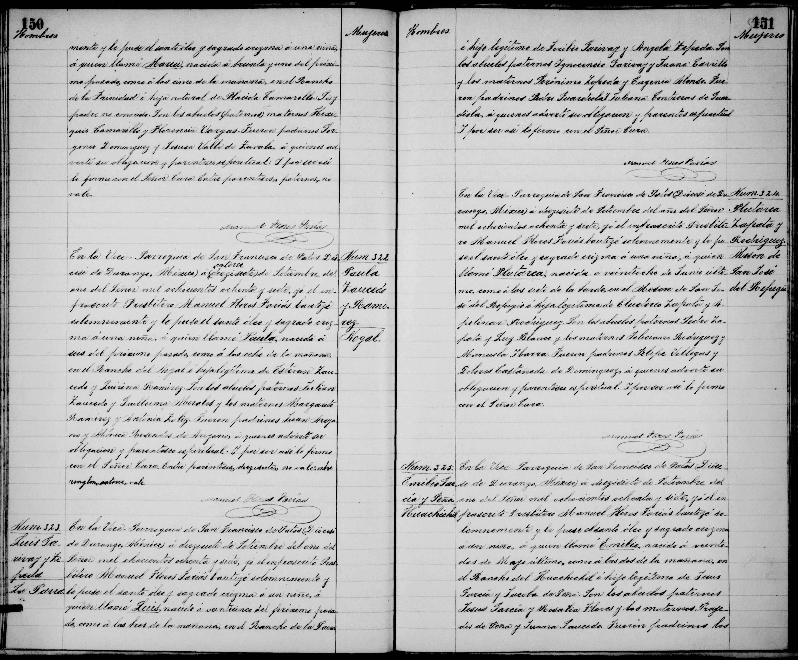

← Volver al Archivo Central
Expediente Histórico: Acta Bautismo Emilio Garcia Peña 1887

Manuscrito Original (Clic para ampliar)
Transcripción Paleográfica
Perfil: Emilio Garcia Peña
Descripción: Acta de bautismo de Emilio Garcia Peña, fechada el 31 de marzo de 1887 en la Villa de Patos. Hijo legítimo de Francisco Garcia y Martina de la Peña.
Transcripción:
Emilio.
Villa de Patos mzo 31 de 87.
En la Yglesia de sn Francisco de Asis de esta Villa de Patos, Yo el presbitero Juan B. de la Peña, cura propio de esta parroquia, bauticé solemnemente a un niño q. nació en esta a las [ilegible] del dia ocho de Agosto ultimo a quien puse por nombre Emilio, hijo legmo de Francisco Garcia y Martina de la Peña. Abuelos paternos Jose Ma. Garcia y Teodora Rodriguez, maternos Francisco de la Peña y Maria Ines [ilegible]. Padrinos D. Francisco Garcia y D.a Martina de la Peña a quienes adverti sus obligaciones y parentesco espiritual. Y para que conste lo firmé.
Juan B. de la Peña